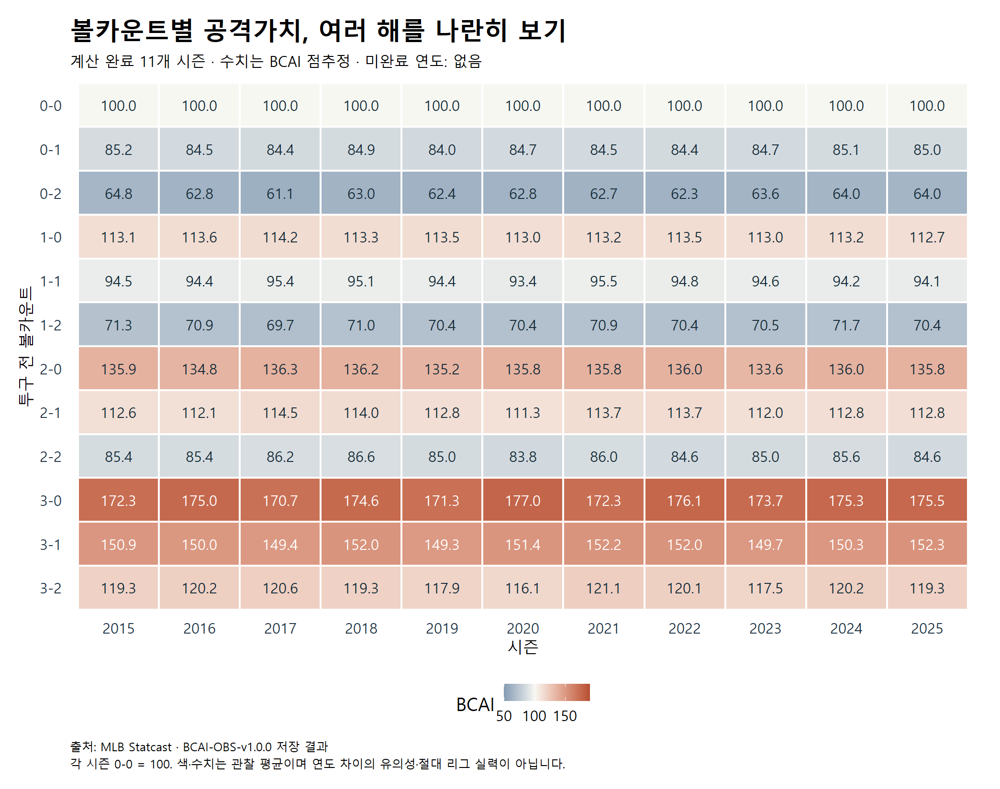

Baseline · BCAI-OBS-v1.0.0 · 저장 결과 보고서
볼카운트의 가치,
여러 해를 나란히 보기
목표 11개 시즌 중 11개 시즌의 R 계산을 완료했습니다.
완료: 2015·2016·2017·2018·2019·2020·2021·2022·2023·2024·2025
미완료: 없음
완료 결과만 표시합니다. 계산 중·대기·실패의 구분은 진행 기록을 따릅니다. 2026 보조 비교는 이 표에 포함하지 않았습니다.
갱신: 2026-09-28 13:57:11 KST
2015~2025의 모든 목표 시즌 계산이 완료됐다.
여러 해의 모양은 어떤가?
색과 숫자는 카운트별 관찰 BCAI입니다. 각 시즌의 0-0이 100이며, 아래 그림만으로 연도 차이가 확실하거나 차이가 없다고 판단하지 않습니다.

표본과 결과의 출처
2024·2025는 기존 Python의 BCAI 점추정·분모·제외 내역을 R로 재현했다. 과거 연도의 실행 완료는 해당 연도의 자료·내부 확인을 뜻하며 Python 교차 재현이나 모델의 검증 범위 확장을 자동으로 뜻하지 않는다.
| 시즌 | 유효 타석 | 경기 | 관측 날짜 | 기간 구분 | 근거 |
|---|---|---|---|---|---|
| 2025 | 182,284 | 2,430 | 2025-03-18 ~2025-09-28 | 정규시즌 전체 일정 대조 | CSV · 실행 기록 |
| 2024 | 181,840 | 2,429 | 2024-03-20 ~2024-09-30 | 정규시즌 전체 일정 대조 | CSV · 실행 기록 |
| 2023 | 183,534 | 2,430 | 2023-03-30 ~2023-10-01 | 정규시즌 전체 일정 대조 | CSV · 실행 기록 |
| 2022 | 181,502 | 2,430 | 2022-04-07 ~2022-10-05 | 정규시즌 전체 일정 대조 | CSV · 실행 기록 |
| 2021 | 181,054 | 2,429 | 2021-04-01 ~2021-10-03 | 정규시즌 전체 일정 대조 | CSV · 실행 기록 |
| 2020 | 66,269 | 898 | 2020-07-23 ~2020-09-27 | 단축 시즌 — 기간·경기 수가 다른 시즌과 다름 | CSV · 실행 기록 |
| 2019 | 185,704 | 2,429 | 2019-03-20 ~2019-09-29 | 정규시즌 전체 일정 대조 | CSV · 실행 기록 |
| 2018 | 184,170 | 2,431 | 2018-03-29 ~2018-10-01 | 정규시즌 전체 일정 대조 | CSV · 실행 기록 |
| 2017 | 184,280 | 2,430 | 2017-04-02 ~2017-10-01 | 정규시즌 전체 일정 대조 | CSV · 실행 기록 |
| 2016 | 183,610 | 2,428 | 2016-04-03 ~2016-10-02 | 정규시즌 전체 일정 대조 | CSV · 실행 기록 |
| 2015 | 182,645 | 2,429 | 2015-04-05 ~2015-10-04 | 정규시즌 전체 일정 대조 | CSV · 실행 기록 |
합친 수치·구간 CSV · 입력 해시·확인 기록 · 2024·2025 재현·연도 차이 해설
카운트별 점추정 표
| 카운트 | 2015 | 2016 | 2017 | 2018 | 2019 | 2020 | 2021 | 2022 | 2023 | 2024 | 2025 |
|---|---|---|---|---|---|---|---|---|---|---|---|
| 0-0 | 100.00 | 100.00 | 100.00 | 100.00 | 100.00 | 100.00 | 100.00 | 100.00 | 100.00 | 100.00 | 100.00 |
| 0-1 | 85.23 | 84.52 | 84.38 | 84.89 | 84.05 | 84.67 | 84.50 | 84.42 | 84.73 | 85.11 | 85.02 |
| 0-2 | 64.78 | 62.82 | 61.10 | 63.01 | 62.40 | 62.84 | 62.72 | 62.27 | 63.65 | 63.97 | 64.01 |
| 1-0 | 113.11 | 113.62 | 114.19 | 113.29 | 113.52 | 113.02 | 113.23 | 113.52 | 113.00 | 113.19 | 112.72 |
| 1-1 | 94.51 | 94.37 | 95.38 | 95.11 | 94.44 | 93.40 | 95.53 | 94.83 | 94.58 | 94.19 | 94.13 |
| 1-2 | 71.25 | 70.90 | 69.67 | 70.97 | 70.44 | 70.41 | 70.88 | 70.42 | 70.48 | 71.66 | 70.40 |
| 2-0 | 135.88 | 134.79 | 136.26 | 136.16 | 135.18 | 135.80 | 135.83 | 135.97 | 133.61 | 135.95 | 135.76 |
| 2-1 | 112.58 | 112.07 | 114.47 | 113.98 | 112.77 | 111.29 | 113.65 | 113.73 | 112.03 | 112.80 | 112.79 |
| 2-2 | 85.41 | 85.38 | 86.20 | 86.59 | 85.03 | 83.82 | 86.00 | 84.56 | 85.04 | 85.64 | 84.57 |
| 3-0 | 172.28 | 174.96 | 170.75 | 174.61 | 171.34 | 176.95 | 172.31 | 176.09 | 173.66 | 175.34 | 175.47 |
| 3-1 | 150.86 | 150.05 | 149.36 | 151.99 | 149.29 | 151.37 | 152.22 | 151.96 | 149.68 | 150.27 | 152.34 |
| 3-2 | 119.33 | 120.15 | 120.61 | 119.35 | 117.89 | 116.10 | 121.08 | 120.08 | 117.47 | 120.18 | 119.28 |
모바일 블로그용 그림
연도 수가 늘어도 세 칸씩 읽도록 볼 수에 따라 나눴습니다. 네 그림은 같은 색상 범위를 씁니다.


해석할 때 남겨둘 선
- BCAI는 해당 카운트에 도달한 타석의 최종 가중 공격가치를 그 시즌 0-0 평균과 비교한 값이다. 120은 시작점 대비 20% 높은 관찰 평균이며, 승률·인과 효과·최적 행동의 점수가 아니다.
- 각 시즌을 서로 다른 기준 평균으로 정규화하므로 연도 간 절대 리그 실력이나 득점 환경의 우열을 읽을 수 없다. 이 표와 히트맵은 패턴을 탐색하기 위한 나란한 표시이며 연도 차이의 유의성 검정이 아니다.
- 시즌별 개별·근사 동시 구간은 summary.csv와 원 결과표에 보존했다. 동시 구간은 각 실행의 정의를 따르며, 전체 역사 연도와 모든 비교를 한꺼번에 보장하는 구간은 아니다. 따로 실행한 단일 연도의 같은 seed 재표본을 임의로 짝지어 빼지 않았다.
- 경기 단위 부트스트랩은 경기 안의 의존성을 반영하지만 경기 사이 동일 선수의 의존성과 외부 가중치 추정 오차까지 반영하지 않는다. 일정 경기 ID 일치는 경기 안의 투구·타석 완전성 보장이 아니다.
- 2020은 단축 시즌이며 실제 경기 수·관측 기간을 표에 별도 표시했다. 표본 크기가 다르므로 다른 시즌과 같은 정밀도로 간주하지 않는다.
파일 사용과 갱신 방법
report.html은 그림과 표를 함께 보는 화면, report.md는 편집 가능한 보고서입니다. summary.csv에는 점추정·구간·분모와 원 실행 경로, report_validation.json에는 입력 해시와 확인 범위가 있습니다. 블로그에는 전체 히트맵이나 모바일용 0·1·2·3볼 PNG를 사용하고 단위·출처·해석 주의를 함께 남깁니다.
새로 완료된 실행이 생기면 저장소 루트에서 다시 실행합니다. 이 허브와 그림만 갱신하며 통계 재계산·다운로드·기존 실행 변경은 하지 않습니다.
./tools/run_r.ps1 -Script tools/render_bcai_history.R연도별 최신 COMPLETE 과거 실행과 고정된 2024·2025 r02를 선택합니다. 원 CSV·표본·검증 JSON의 해시, 12카운트와 0-0 기준을 확인합니다. 실패 실행·기존 원고·외부 게시물은 변경하지 않습니다. 보고서 Markdown